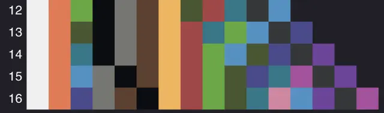
相信大家对无延迟投掷器链已经期待了很久了，那么本专栏将要讲述的就是无延迟投掷器链的发现历程与底层原理，并且该原理不止有无延迟这一个应用。
投掷器在被充能后会投掷其中的物品，这点我们都知道，但投掷器先后投掷的物品被捡起的顺序与投掷的顺序有没有关系呢？
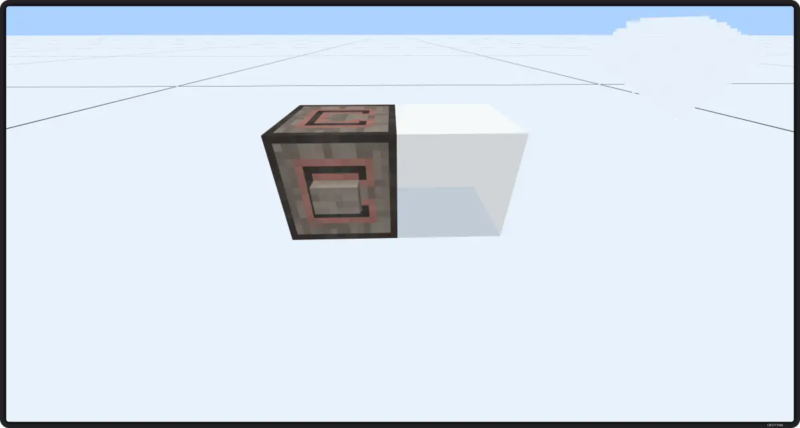
摆出如图所示电路，并在投掷器内放上几个互不相同的单个物品。这时，站远一些，多次按动按钮，记住物品被投掷出的顺序，因为玻璃的挤压，物品应当会在同个位置。这时捡起他们，由于在同一位置，物品会被同时捡起。仔细观察会发现，物品栏中被捡起的物品的顺序与物品被投掷出的先后顺序是完全一致的。
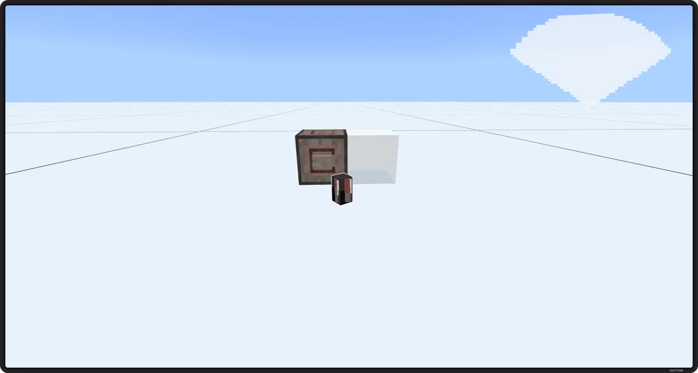
多次试验后没有反常现象，那么这时我们可以下结论，瞬间被捡起的物品，其捡起顺序即为物品实体创建顺序，与物品种类等无关。我们还知道，投掷器创建物品的顺序，应当就是投掷器本身被激活的顺序，这时我们就可以测量投掷器投掷出的物品被同时捡起的顺序来代替测量投掷器被激活的顺序。
这对平时的情况没有什么影响，但我们稍微动一下脑子，这样是不是就可以测出在同一红石刻内被激活的投掷器的激活顺序了呢？
想到这么一点，不赶紧测试就说不过去了。你可以摆出类似如下的电路，使投掷器均被间接激活。这里我们使用的是混凝土在创造物品栏的排序标记不同投掷器。白色代表第一个被放置的投掷器，淡灰色代表第二个被放置的，以此类推。
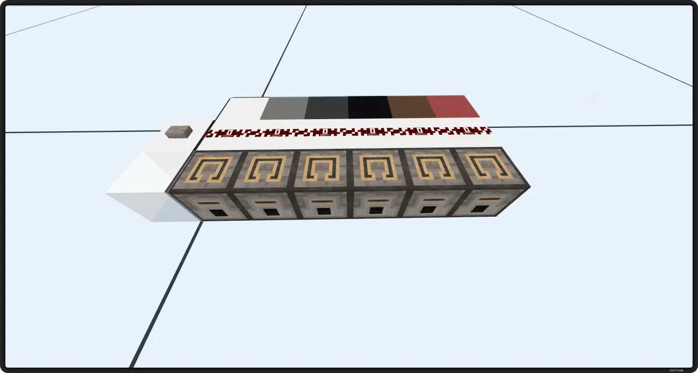
接着我们按下按钮，同时激活这些投掷器，并用某种方法把物品归到同一位置，使其方便被同时捡起。可以用水流或飞行器。多次试验后我们发现，在均间接激活且同区块下，物品被捡起的顺序与投掷器的位置，朝向等都没有关系，只与投掷器被放置下的顺序相关，包括活塞推动等放置方式。
我们先测试不同数量的投掷器的顺序，期初，效果很好，在1~4个投掷器的时候，我们都是按投掷器放置的顺序被捡起的，但大于等于5时就没那么简单了。
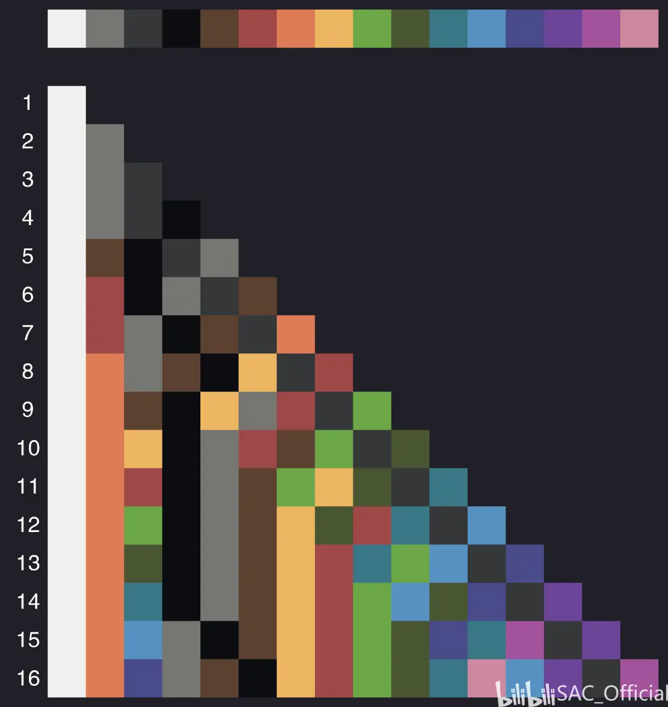
虽然结果有些杂乱，但至少这说明了这个结果在同区块内是只与放置顺序相关的。
那么我们还可以测试一些有趣的情况，例如，当一条链上的投掷器被强充能会发生什么呢？这里同样也有有趣的现象，为了方便起见，这里只展示16个投掷器的表。
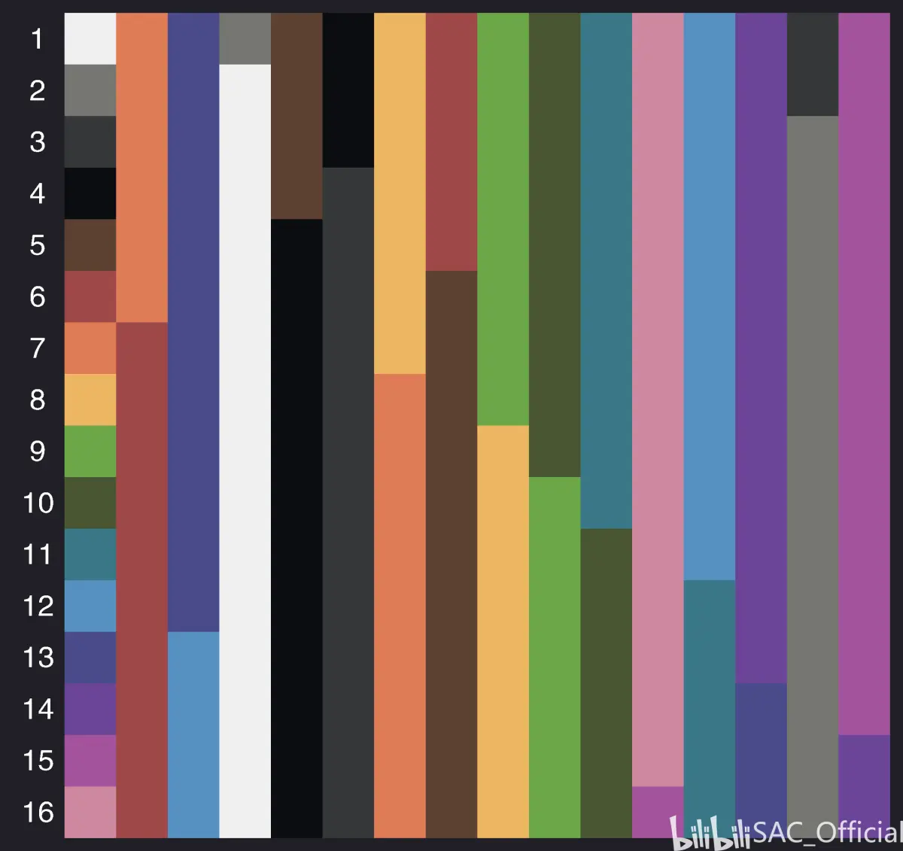
当我们在第一个被放置的投掷器上激活整条链时，结果与原先的间接充能相同。然后我们依次在第二，第三个投掷器上激活，最终得到了上表。我们发现此表有很强的规律性，可以递推得到。当激活第二个投掷器时，激活顺序仅是将第一与第二个交换位置，其余的沿用上一个激活位置产生的顺序；激活第三个时，顺序与激活第二个时的也只是相差了第二和第三个的顺序，以此类推，通过不断交换，我们可以得到一张 n×n 的表，记录了区块内 n 个投掷器在同一条链上被任意投掷器上的源同时强充能的投掷顺序表。
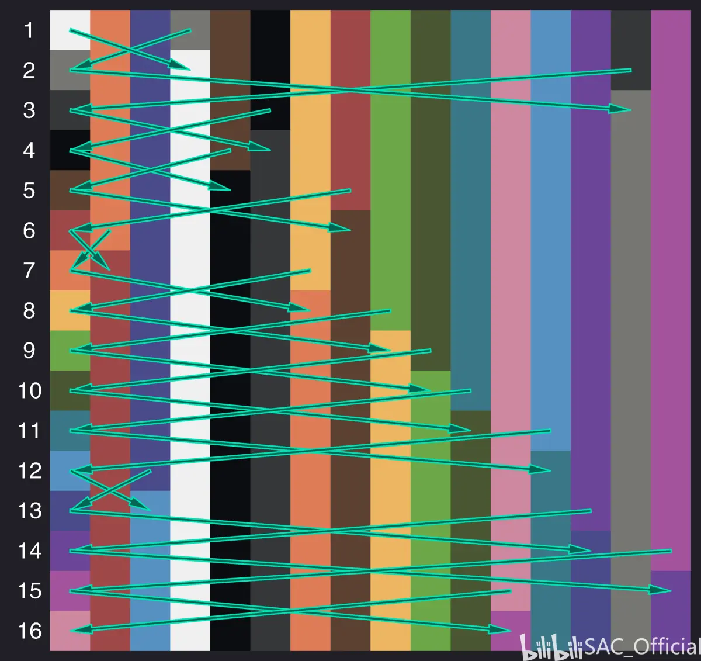
要注意的是，当区块内有其他会影响计划刻的方块时，可能需要重新测表。
好了，有了上述测得的表，与测表方式，我们就可以开始着手制作无延迟投掷器链了。
显然，想做无延迟投掷器链，只需要让投掷器在同 gt 内被依次激活即可，我们知道在投掷器小于等于 4 个时，顺序是十分规律的，那么我们可以按先前在这篇专栏中介绍的活塞放置方块的顺序来使得这些投掷器被按顺序放置：
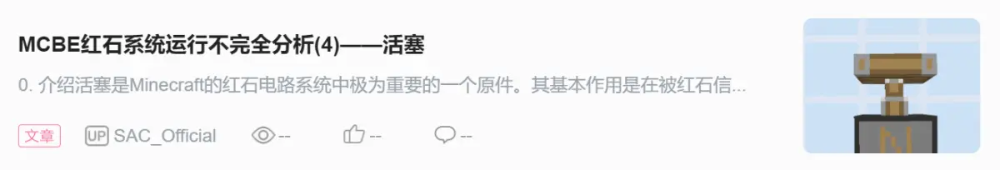
站内专栏 »例如这样，激活活塞，投掷器就会被按顺序放置好，这是在投掷器内放置物品，激活投掷器，物品就会被瞬间投掷出，跨越4个方块。
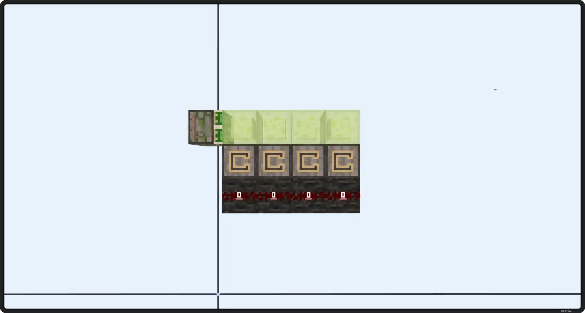
但超过 4 个时，顺序就变得有些捉摸不透了，所以相应的改变放置顺序的电路就会有些丑，例如下方的 16 投掷器链:
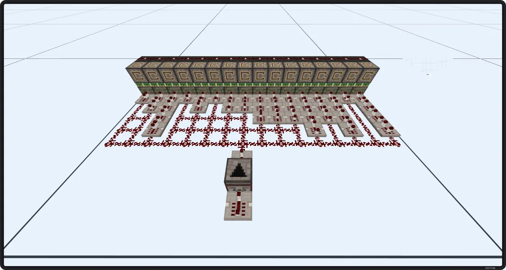
注意，这只是实验性质的电路，未经优化。无延迟投掷器链当然也可以竖着放置。
这里只举一个简单的例子：
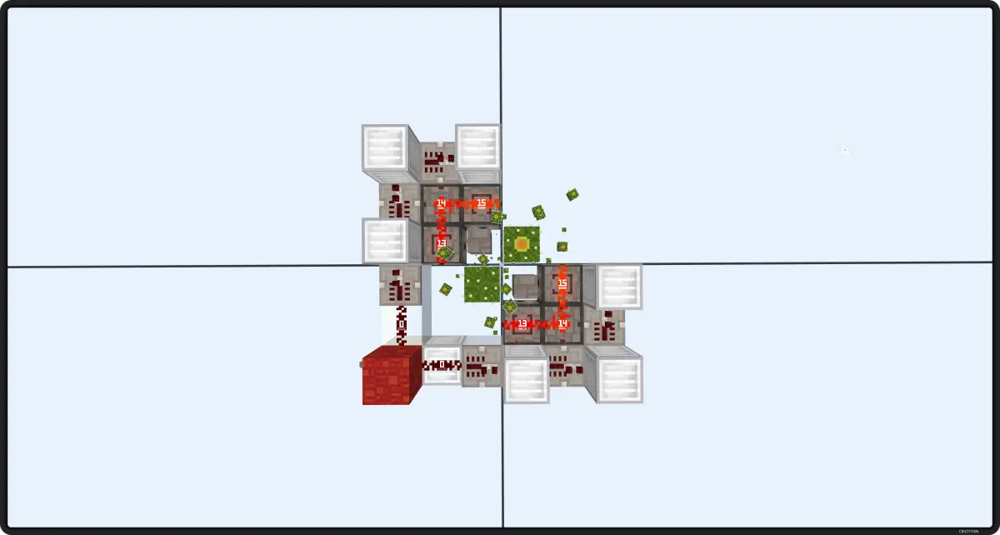
在知晓了发射器的运行顺序后，我们可以很轻易的让液体被发射的瞬间收回去，上图的 0t 催熟仙人掌机就是一个例子，甚至每个仙人掌可以同时受到两个催熟。要注意的是，这个机械得制作在四个区块的交叉点。
以下便是简化后的游戏内计划刻执行机制，运行科输出 1~99 的计划刻执行顺序。
/*copyright @hhhxiao*/
#include <algorithm>
#include <iostream>
#include <unordered_map>
#include <unordered_set>
#include <vector>
struct BlockPos {
int x, y, z;
bool operator==(const BlockPos& p) const {
return x == p.x && y == p.y && z == p.z;
}
};
struct BlockTick {
int tick;
BlockPos pos;
int priorityOffset;
bool operator<(const BlockTick& rhs) const {
if (tick < rhs.tick || tick > rhs.tick)
return this->tick < rhs.tick;
else
return this->priorityOffset < rhs.priorityOffset;
}
bool operator>(const BlockTick& rhs) const {
if (tick < rhs.tick || tick > rhs.tick)
return this->tick > rhs.tick;
else
return this->priorityOffset > rhs.priorityOffset;
}
inline void tickBlock() { printf("%-2d | ", pos.x); }
};
class MovePriorityQueue {
public:
size_t size() const { return heap_.size(); }
bool empty() const { return heap_.empty(); }
BlockTick top() { return heap_.front(); }
BlockTick pop() {
std::pop_heap(heap_.begin(), heap_.end(), std::greater<BlockTick>());
auto tick = heap_.back();
heap_.pop_back();
return tick;
}
void push(const BlockTick& tick) {
heap_.push_back(tick);
std::push_heap(heap_.begin(), heap_.end(), std::greater<BlockTick>());
}
private:
std::vector<BlockTick> heap_;
};
struct BlockTickingQueue {
MovePriorityQueue nextTickQueue;
MovePriorityQueue activeTickQueue;
void add(const BlockTick& tick) { this->nextTickQueue.push(tick); }
void tick() {
while (!nextTickQueue.empty()) {
auto tick = nextTickQueue.pop();
activeTickQueue.push(tick);
}
while (!activeTickQueue.empty()) {
/* code */
auto t = activeTickQueue.top();
t.tickBlock();
activeTickQueue.pop();
}
}
};
int main() {
for (int n = 1; n <= 99; n++) {
BlockTickingQueue q;
printf("| ");
for (int i = 0; i < n; i++) {
BlockTick t = {0, {i + 1, 0, 0}, 0};
q.add(t);
}
q.tick();
printf("\n");
}
return 0;
}可以看到，代码中并没有显现出 MOJANG 对计划刻的顺序进行了某种固定的打乱，那么造成这个顺序的唯一可能就是 STL 了。使用 C++ 编写的 Minecraft Bedrock Edition 同样也会使用 C++ 的标准模板库，在上述的代码中我们可以看到，计划刻列表是一个 vector ，以隐式形式储存堆，所以造成这个顺序的是 STL 内部对堆的实现。
template <class _RandomAccessIterator, class _Distance, class _Tp,
class _Compare>
void
__push_heap(_RandomAccessIterator __first, _Distance __holeIndex,
_Distance __topIndex, _Tp __value, _Compare __comp)
{
_Distance __parent = (__holeIndex - 1) / 2;
while (__holeIndex > __topIndex && __comp(*(__first + __parent), __value)) {
*(__first + __holeIndex) = *(__first + __parent);
__holeIndex = __parent;
__parent = (__holeIndex - 1) / 2;
}
*(__first + __holeIndex) = __value;
}
template <class _RandomAccessIterator, class _Compare,
class _Distance, class _Tp>
inline void
__push_heap_aux(_RandomAccessIterator __first,
_RandomAccessIterator __last, _Compare __comp,
_Distance*, _Tp*)
{
__push_heap(__first, _Distance((__last - __first) - 1), _Distance(0),
_Tp(*(__last - 1)), __comp);
}
template <class _RandomAccessIterator, class _Compare>
inline void
push_heap(_RandomAccessIterator __first, _RandomAccessIterator __last,
_Compare __comp)
{
__STL_REQUIRES(_RandomAccessIterator, _Mutable_RandomAccessIterator);
__push_heap_aux(__first, __last, __comp,
__DISTANCE_TYPE(__first), __VALUE_TYPE(__first));
}
template <class _RandomAccessIterator, class _Distance, class _Tp>
void
__adjust_heap(_RandomAccessIterator __first, _Distance __holeIndex,
_Distance __len, _Tp __value)
{
_Distance __topIndex = __holeIndex;
_Distance __secondChild = 2 * __holeIndex + 2;
while (__secondChild < __len) {
if (*(__first + __secondChild) < *(__first + (__secondChild - 1)))
__secondChild--;
*(__first + __holeIndex) = *(__first + __secondChild);
__holeIndex = __secondChild;
__secondChild = 2 * (__secondChild + 1);
}
if (__secondChild == __len) {
*(__first + __holeIndex) = *(__first + (__secondChild - 1));
__holeIndex = __secondChild - 1;
}
__push_heap(__first, __holeIndex, __topIndex, __value);
}STL 库有许多不同的实现，上方为 SGI-STL 的部分实现，我们可以很轻易的看出就是上述部分造成了投掷器的顺序被打乱。下面是简化版的 python 实现：
def adjustList(l):
d = len(l)-1
h = 0
s = h*2 + 2
while s < d:
l[h] = l[s]
h = s
s = h*2 + 2
if s == d:
l[h] = l[s-1]
h = s - 1
l[h] = l.pop(-1)
def operation(l):
t = []
while len(l) > 1:
t.append(l[0])
adjustList(l)
t.append(l[0])
return t
def getOrder(num):
r = []
l = operation(list(range(num)))
for i in l:
r.append(l[i]+1)
return r
print(getOrder(128))在了解了这些之后，我们可以手动推出不同情况下的投掷器顺序。下面我们以 7 个投掷器举例：
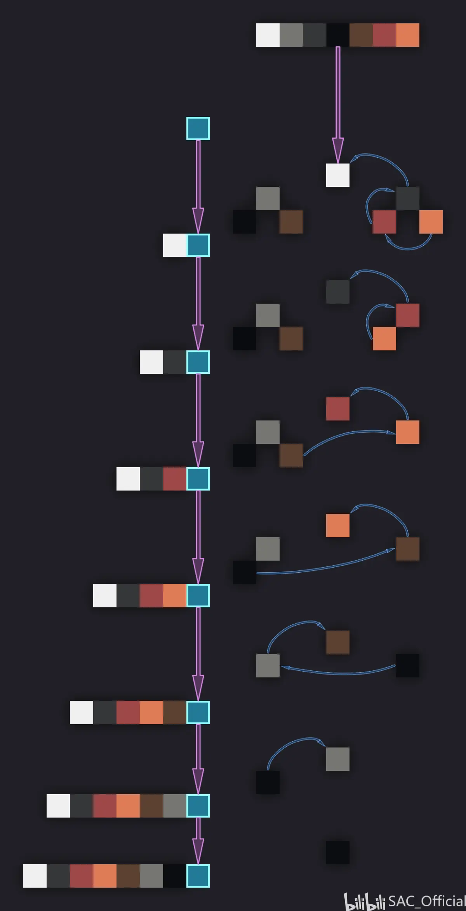
首先，将 1~7 按顺序排列出一棵二叉树，每次从最右侧往外挤，让最后一个填补挤上去的空缺，如果树是完美的，就把倒数第二个代替最右下方的挤上去，最后一个填补挤上去的空缺。
我们得到了一个中间表，我们只需再将这个中间表按上述方法再执行一次，就可以得到与上面测试得到的一样的表了。
无延迟投掷器链发现及其他应用与 Python 代码提供：panda4994万岁
代码挖掘与c++代码提供：hhhxiao
打杂的：OEOTYAN